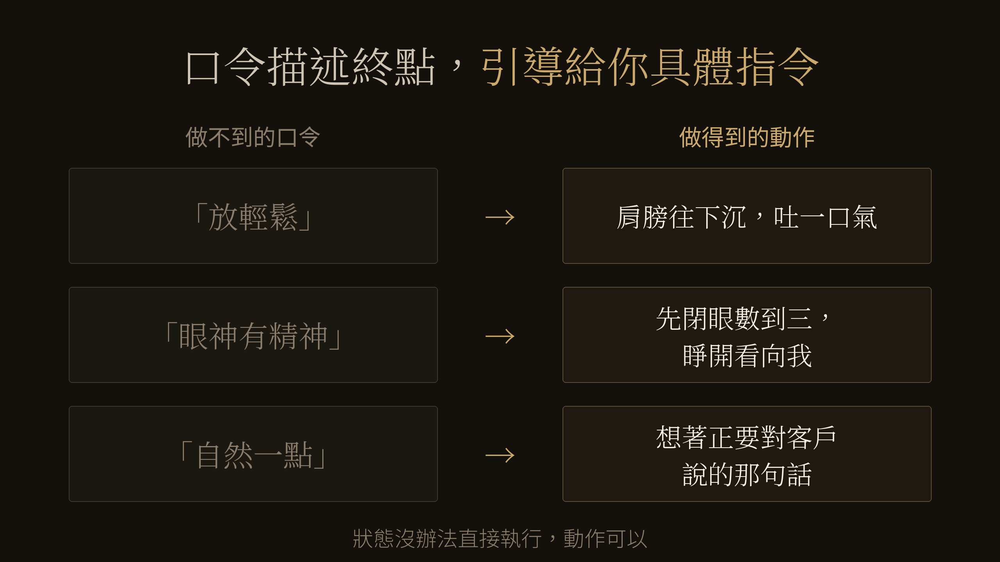

「來，自然一點。」
這句話在拍攝現場很常見，但對已經緊張的人來說，通常不夠具體。聽到的人會很認真地照做：深呼吸、抖抖肩膀、在心裡命令自己放鬆。然後更僵。
它描述了想要的結果，卻沒有告訴被拍的人下一步可以做什麼。「自然」描述的是想要的狀態，但被拍的人真正需要的是可以執行的指令。
做不到的指令，都長同一個樣子
回想那些讓你更慌的指令：放輕鬆、有精神一點、做自己就好。它們的共同點是，都在描述想要的結果，卻沒有告訴被拍的人下一步可以做什麼。
狀態沒辦法直接執行，但動作可以。「肩膀往下沉，吐一口氣」做得到；「先閉上眼睛，數到三，睜開之後看向我」做得到；「想著你正要對一位老客戶說明最有把握的那個方案」也做得到。把抽象的要求拆成可以執行的動作，人通常比較容易慢慢進入需要的狀態。
這就是口令和引導的差別。口令描述終點，引導給你路徑。

口令描述終點，引導給你路徑。
CHUN.EN 現場常處理的，其實是三件事
把狀態翻譯成動作，只是最表層的一件。在我們的拍攝現場，引導通常同時在處理三件事。
把抽象要求變成具體動作。視線看哪裡、肩膀怎麼放、身體怎麼移動。指令越能直接執行，被拍的人越不需要自己猜。
讓注意力不要一直停在自己的表情上。話題、情境、甚至現場放的音樂，目的都一樣：讓你有別的事情可想。當注意力不再只停在自己的臉上，表情通常比較容易出現自然的變化。這一層的具體做法，〈拍照表情不自然？先別急著練笑〉談得更細。
讓被拍的人可以確認與提出需求。被拍的人需要知道現在正在拍什麼、剛剛哪個方向可以保留，以及下一步要怎麼調整。比起讓鏡頭一直沉默地對著人，持續而具體的溝通更容易讓人知道自己正在做什麼。第一次拍攝的人為什麼容易一路配合現場，〈拍照尷尬，不一定是你不會拍照〉拆解過；被拍的人越能說出不舒服或不符合自己的地方，現場就越能及時調整。
被拍的人，也可以主動提出需求
CHUN.EN 的拍攝會分段檢視畫面，不是整場拍完才第一次看到結果；過程中會確認人物狀態、構圖與主要用途，並在當天完成方案內的選片。所以提出需求不是打斷流程，它本來就是流程的一部分。有三句話，你可以自己帶去現場。
第一句：「我第一次拍，前面可能會比較僵。」這句話一說出來，現場就能調整前段節奏與拍攝順序。
第二句：「我聽不懂的時候會直接問。」先把這句說出口，之後每一次發問都不需要重新鼓起勇氣。
第三句：「這個姿勢我不太舒服」或「這個角度我不太像自己」。當下說出來，現場當下就能調整；悶到選片時才說，能補救的就少了。
這三句話沒有一句需要專業知識。它們做的事情只有一件：把你從配合的客人，變回這場拍攝的主角。
下一次有人對你喊「自然一點」，你會繼續用力放鬆，還是問一句：「可以告訴我，具體要做什麼嗎？」